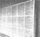
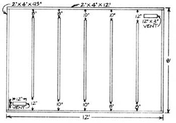
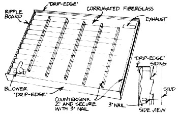

MOTHER's research staffers develop so many Innovative devices that It's just not possible to give each one of them the space that it deserves. So, we've decided to present an easy-to-build, inexpensive solar project in each of our next few issues. For example, you can make this 96-square-foot collector-which will pump as many as 19,000 free Btu's per hour into your home-for just over $100!
There are some real advantages to using solar energy to heat your home's air ... rather than depending upon the transfer of the sun's heat to the air by a thermal mass. Not only do such "direct" solar systems circulate and humidify your dwelling's atmosphere, but many are also surprisingly easy to build. In fact, you can have MOTHER's convective collector (which gets an "active" boost from a small blower) ready to nail to any south-facing wall on your house in a couple of hours!
Start the construction of your sunpowered heater by locating the studs inside your frame wall and scouting for any plumbing or wiring which might get in the way of the collector's intake or exhaust vents. Once you've mapped out a suitable 8' X 12' location, just countersink holes every two feet in the 2 X 4's which will be the collector's frame. Make the holes about two inches deep (as indicated in the illustrated side view). Then fasten the parts to your wall with 3-inch nails.
Next you can add the collector's internal baffles by countersinking and nailing these 2 X 4's to the wall just as you did the frame pieces. The spacing shown in the diagram is critical ... it maintains the correct air flow through the system. (The baffle boards should-by virtue of their 24-inch separation-connect with the studs below them.)
Now that the frame is complete, cut the 3" X 12" vent holes in your wall, line them with Thermax brand insulating board, and seal the cracks with silicone caulking. If you trim a standard-sized sheet of the insulator carefully, there should be enough material left to completely cover the rest of the exposed wall space inside the frame. Make sure that the Thermax fits tightly around the boards, and seal every junction with a liberal amount of caulking. With that done, brush a coat of flat black paint on the inside of the collector.
Once the paint is dry, lay each piece of ripple board on an appropriate frame member, and secure the "wobble wood" with three nails per section. The translucent corrugated fiberglass fits right over the wood, and-after you've drilled a hole that's three sizes smaller than the diameter of the rubber-sealed roofing nails (which secure the covering) through every third bump in both the wood and the glass-you can caulk the surfaces and affix the light-admitting material.
Finally, tack and carefully apply silicone-seal to a 12-foot strip of "dripedge" along the top and bottom of the collector ... to seal the fiberglass and protect the wood from rain. Then cut a 94 X 8" vent in the vertical 2 X 4 next to the exhaust duct, to allow the collector to breathe during extremely warm spells. (Of course, this hole should be plugged when you're using the solar heater.) In addition, if you live in a very windy climate, you may wish to add an extra layer of glazing for insulation. (We've found the 3M Company's Flexigard plastic, in 3-mil thickness, to be an excellent substance for this purpose.)
To start your solar "heater" up, just insert a blower (about one cubic-foot-per-minute capacity for each square foot of collector) in the intake duct, and let the sunshine warm your home. In moderate climates, two of these devices can heat your entire abode for less than $300 total cost (including the blowers). At that rate, the materials should return your investment in less than a year.
(4) 2'-foot by 12-foot sheets corrugated fiberglass
(3) 3/4 inch by 4-foot by 8-foot sheets Thermax
(9) 8-foot strips ripple board
(2) 12-foot strips "drip edge"
(1) quart flat black paint
(3) tubes silicone caulking
(7) 8-foot long 2-by-4s
(2) 12-foot 2-by-4s
nails
|
 |
 |
 |